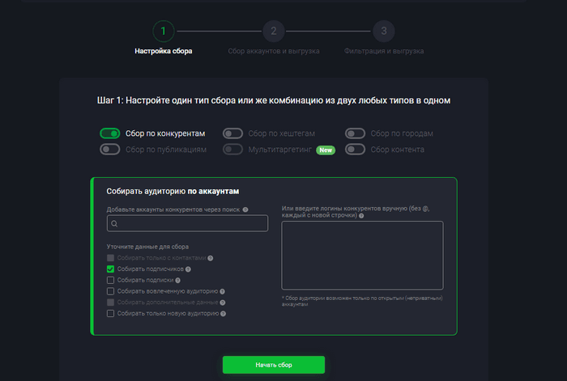
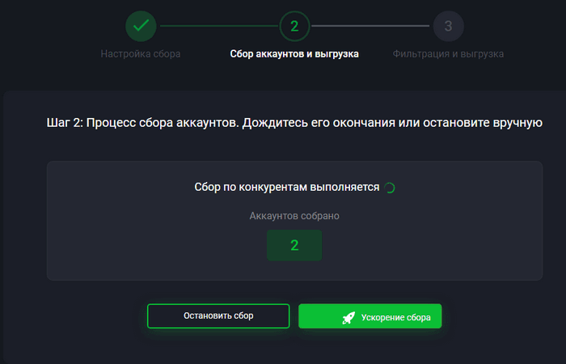
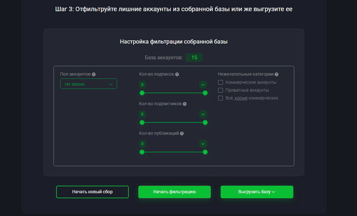
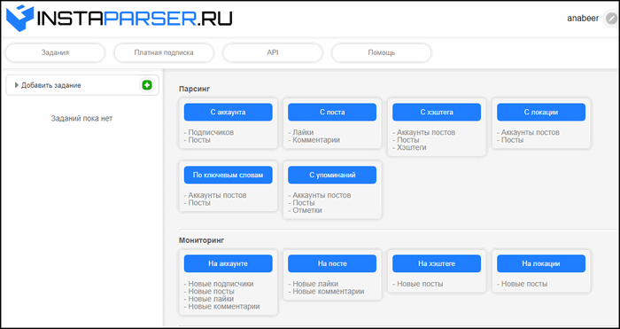
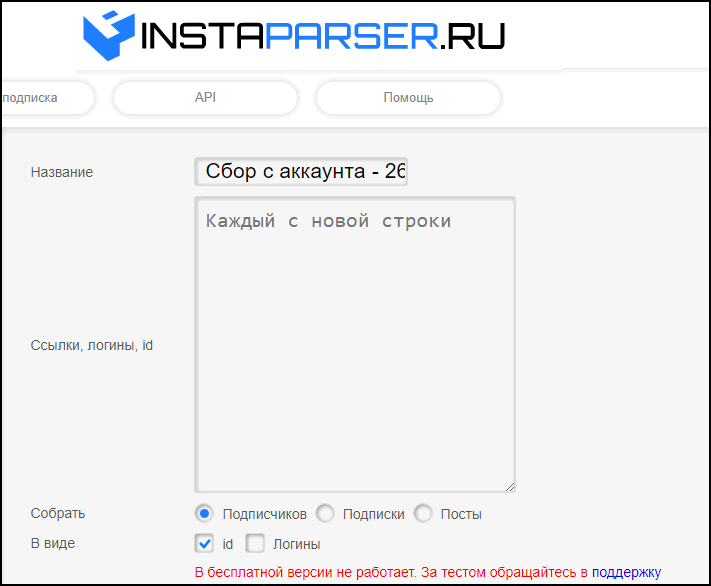
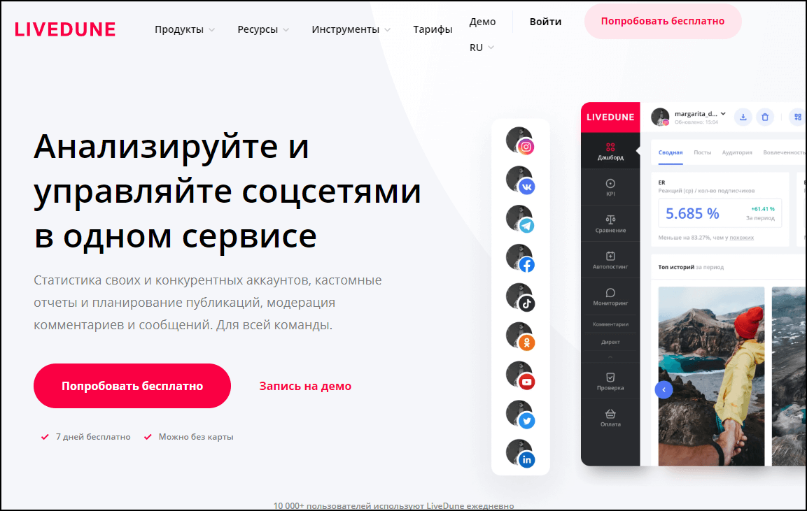
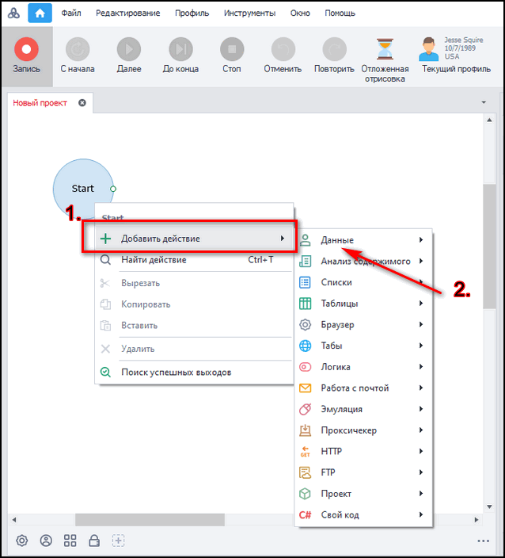
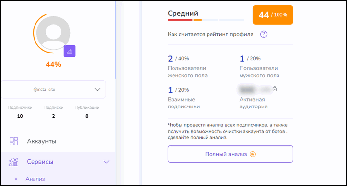
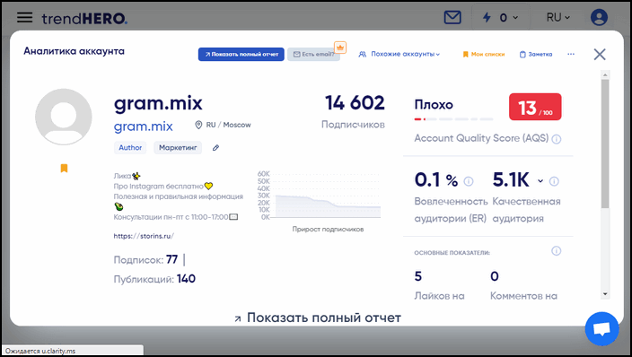

Анализ и сбор целевой аудитории в Инстаграме

Анализ целевой аудитории в Инстаграме* с помощью парсинга — это просто способ, как собрать потенциальных подписчиков и организовать определенный тип действий по выбранному количеству и целям. Например, владелец онлайн-магазина ищет потенциальных клиентов для продажи товара и рассылки в Директ.
Что такое парсинг ЦА в Инстаграме*
Программы и сервисы для парсинга ищут пользователей по интересам, их виду деятельности, половой принадлежности, географическим данным и возрасту. Пользователь отправляет запрос, указав необходимые данные и ссылки, и программа самостоятельно подыскивает варианты. Преимущества поиска информации таким способом:
- возможность собрать потенциальную аудиторию всего за пару часов;
- массовая работа с ЦА;
- автоматизация без постоянного наблюдения пользователя;
- возможность установить лимиты на действия.
Например, владелец аккаунта желает продвигать аккаунт с помощью массового фолловинга. Но добавлять потенциальных подписчиков самостоятельно – долго. Эту задачу можно доверить парсеру, который будет постепенно добавлять выбранные профили по заранее заданным параметрам. Или, предварительно сформирует базу, а уже после – сделает выборку по ней.
Как определить целевую аудиторию для своего канала
Потенциальную целевую аудиторию можно определить по критериям:
- заинтересованность в теме. После одного из нововведений в Инстаграме*, каждый пользователь может редактировать рекламные интересы;
- хештеги и геометки;
- возраст и половая принадлежность;
- подписки на похожие аккаунты;
- активность и ежедневное количество времени, проведенное в социальной сети.
 Поиск целевой аудитории по хештегу
Поиск целевой аудитории по хештегуОпределить целевую аудиторию в Инстаграм* таким способом проще всего: программа подбирает людей и показывает пользователю в любом удобном формате. После, перечень можно отредактировать, исключив ненужных.
Рекомендую: прежде чем набирать целевую аудиторию - почистите ботов в своем аккаунте Инстаграм*.
Самостоятельно определить ЦА можно таким способом:
- хештеги, которые владелец указывает в профиле;
- страницы с подписками. Посмотреть, какие сообщества есть у потенциального подписчика;
- описание аккаунта;
- геометки.
Так, к с помощью описания страницы можно узнать возраст и место проживания человека. Или же перейти к публикациям и посмотреть по геометкам.
ТОП-4 сервиса для сбора данных
Найти целевую аудиторию в Инстаграме* помогут сервисы и программы, направленные на сбор данных и поиск предполагаемых открытых аккаунтах. Функции, доступные в популярных программах для парсинга:
- работа с несколькими аккаунтами одновременно;
- сбор данных с выгрузкой в виде кода, списка или таблицы;
- создание автоматизированных задач;
- добавление скриптов.
ТОП-4 наиболее популярных:
- Insta-Parser. С его помощью можно получить контент, описание к публикациям, данные о подписчиках и подписках конкурента.
- InstaParser. Сбор потенциальных подписчиков по прикрепленной ссылке.
- LiveDune. Мониторинг аккаунта, подробная статистика и отложенный постинг.
- ZennoLab. Создание автоматизированных задач, вплоть до написания ботов и мини-программ.
Каждый из сервисов представлен в разных форматах: от веб-страницы до программного обеспечения на компьютер.
№1 Insta-Parser
С помощью сервиса Insta-parser можно собрать любые данные по аккаунту, хештегам и геометкам, публикациям. Таргетинг с помощью Insta-Parser универсальный и поддерживает даже скачивание изображений, описаний в публикациях. Собрать данные можно с таких разделов:
- по конкурентам. Перечень подписчиков, подписок, новая и вовлеченная аудитория;
- по хештегам. Перечень авторов постов, аудитория;
- по городам;
- по публикациям. Список тех, кто поставил лайк или оставил комментарий;
- мультитаргетинг. Комбинировать типы собранной информации;
- по контенту. Фото-материалы или описания к публикациям.
Сервис обладает широким перечнем инструментов, предназначенных для блогеров, владельцев интернет-магазинов, SMM-специалистам. Как воспользоваться:
- Зайти на сайт – зарегистрироваться и авторизовтаься.

- Перейти в раздел: «Парсинг» - выбрать раздел, откуда будет получена информация.
- Указать ссылку конкурента – подождать, пока парсер соберет данные.

- Получить файл с базой данных.

После выгрузки, пользователь может её отфильтровать и выбрать подходящий формат для просмотра.
№2 InstaParser
Найти целевую аудиторию в Инстаграм* проще через InstaParser. Реализован в виде онлайн-сервиса, куда можно подключить профиль любой социальной сети и собирать данные. Поддерживает три основные функции:
- мониторинг. На аккаунт, на пост, на хештеги, локации;
- фильтрация. Сортировка учетных записей по заданным параметрам;
- парсинг с любых видов активности.

Как работает:- Зайти в сервис – авторизоваться.
- Перейти в раздел: «Парсинг» - По аккаунту.

- Добавить ссылку – указать параметры.
- Запустить.
Задачей можно управлять: отключать и запускать заново. Есть лимиты по времени и количеству обработанных заявок. Пользователь может указать такие критерии подбора:
- наличие аватарки;
- приватность профиля;
- тип: бизнес или обычный;
- наличие Историй;
- хайлайтс;
- количество публикаций, подписчиков, коэффициенты вовлеченности.
В количестве указывают максимальное и минимальное. По завершению нужно запросить отчет в котором будут указаны все собранные аккаунты.
№3 LiveDune
Сервис для сбора информации, отображения подробной статистики. Подходит для управления как одним, так и несколькими аккаунтами. Основное преимущество – динамика подписчиков, а также сравнение аккаунтов. Например, владелец блога может сравнить свою страницу с конкурентами.

Для работы необходима авторизация в сервисе и разрешение на подключение. Но можно использовать для просмотра информации о чужом профиле. То есть, конкурентов или любой интересующей странице. LiveDune предлагает постоянный мониторинг, планирование задач на год и работу в команде, с отображение коэффициента полезного действия от определенного исполнителя.№4 ZennoParser
Узнать целевую аудиторию или массово создать аккаунты, написать комментарии возможно через ZennoParser. Представлено в виде программного обеспечения для компьютеров и ноутбуков. С помощью этой программы можно запустить автоматическую авторизацию, скопировать названия всех аккаунтов из комментариев. В работе сложнее, чем онлайн-сервисы, но выполняет больше задач. Как работать:
- Перейти на сайт ZennoLab и зарегистрироваться.
- Скачать демонстрационную версию программы.

- Установить и запустить – подтвердить авторизацию.
- Перейти к созданию задачи с помощью пункта: «Новый проект».
- Добавить – в правой части меню ввести ссылку.
- Появится новое действие – нажать по нему правой кнопкой мыши: «Добавить действие».
- Базы данных – подключиться к сбору сведений из публикаций, сообществ.
Принцип работы сервиса в том, что пользователь «показывает» программе действие, которое будет в дальнейшем повторяться без участия человека.
Анализ аудитории для продвижения
Искать целевую аудиторию в Инстаграме* помогут сервисы, направленные на поиск потенциальных подписчиков, сбор информации по географии, полу и возрасту. Проведя анализ целевой аудитории, владелец блога сможет определить:
- свои ошибки в продвижении;
- узнать сведения о статистике конкурентов;
- определить, какие публикации и формат подходит для продвижения больше остальных.
Например, с помощью InstaHero можно узнать, какая запись была наиболее интересна для подписчиков. В сравнение с обычной статистикой Инстаграма*, в сервисах видны хештеги, откуда пришла аудитория, геометки и их интересы. Кроме этого, также есть просмотр по постоянным посетителям, гостям. Отследить аудиторию можно тремя способами:
- Самостоятельно. Посмотреть по текущим подписчикам и комментариям.
- Онлайн-сервисы. Подробная статистика при подключении аккаунта.
- Обратившись к СММ-специалисту.
Любой из вариантов требует наблюдения за поведением посетителей страницы. Можно использовать комбинированные способы, как самостоятельный сбор статистики, так и применение дополнительных сервисов.
#1 InstaHero
Через InstaHero можно привлечь целевую аудиторию, если задействовать все функции. Отличительной особенностью сервиса является удаление ботов, которые мешают дальнейшему продвижению страницы, засоряя статистику и мешая демонстрации публикаций на нужных подписчиков. В сервисе предложены разделы:
- анализ. Проверка статистики аккаунта;
- мониторинг. Постоянное наблюдение за развитием профиля;
- удаление ботов. Определяет, кто из подписчиков ненастоящий человек;
- защита от спама. Удаляет нежелательные сообщения из комментариев;
- проверка блоггеров. Определяет, какая статистика у какого-либо из популярных пользователей.
InstaHero полезен для блоггеров, рекламодателей и маркетологов, планирующих работать одновременно с несколькими страницами.

Чтобы начать работу с сервисом, нужно авторизоваться и подключить свой профиль. После короткой проверки появятся данные об аудитории, анализ шапки (её удобочитаемость, краткость и корректность), наличие взаимных подписчиков.#2 TrendHero
Сервис работает с аккаунтами блоггеров, показывает статистику в виде отчетов и показывает эффективность рекламных публикаций. С его помощью можно найти популярную личность, с которой можно сотрудничать для рекламы. Отчеты многих инфлюенсеров есть в открытом доступе.

Кроме этого, ThrendHero поддерживает работу с несколькими учетными записями одновременно, и бесплатное подключение первого. Владелец блога может ежедневно отслеживать статистику своего блога, переключаясь на другие подключенные учетные записи.#3 InstaPlus.Pro
Были жалобы от пользователей, использование на свой страх и риск, рекомендуем воспользоваться другими сервисами. Мобильное приложение для продвижения аккаунта в социальных сетях. В его функции входит:
- масслайкинг, масслукинг и массфолловинг;
- удаление ботов и массовая отписка;
- поиск потенциальной аудитории и фильтрация;
- сбор личных данных: экспорт и импорт.
Для работы нужно установить APK-версию на смартфон и зарегистрироваться. После, в приложении, указать логин профиля, с которым нужно работать. Если необходима массовая подписка, то пользователь указывает все данные для авторизации. В приложении доступны лимиты, чтобы аккаунт не заблокировали за большое количество действий. Одна из функций, которая поможет в продвижении – сбор аудитории по лайкам, комментариям. Приложение просматривает, кто из пользователей отметил пост интересным и показывает никнеймы этих людей.
Способы привлечь целевую аудиторию
Кроме сервисов, приложений и программ есть естественные способы, как набрать целевую аудиторию в Инстаграм*. ТОП-5 методов продвижения:
- изучать конкурентов. Смотреть страницы тех, кто часто комментирует конкурентов, просматривать популярные публикации;
- публиковать контент и пробовать новые форматы. Участие в трендах – идеальный вариант, как привлечь и получить новых подписчиков;
- использовать другие социальные сети. Например, размещать видео в ВК или TikTok*, с добавлением ссылки на Инстаграм*;
- сотрудничать с блогерами в той же нише;
- проводить небольшие конкурсы с упоминанием основного аккаунта.
Используя комплексно каждый вариант, автор сможет получить новую заинтересованную аудиторию. Популярные разделы для поиска потенциальных подписчиков – Reels. Короткие видео, где используются новые и трендовые мелодии, которые быстро попадают в ТОП.